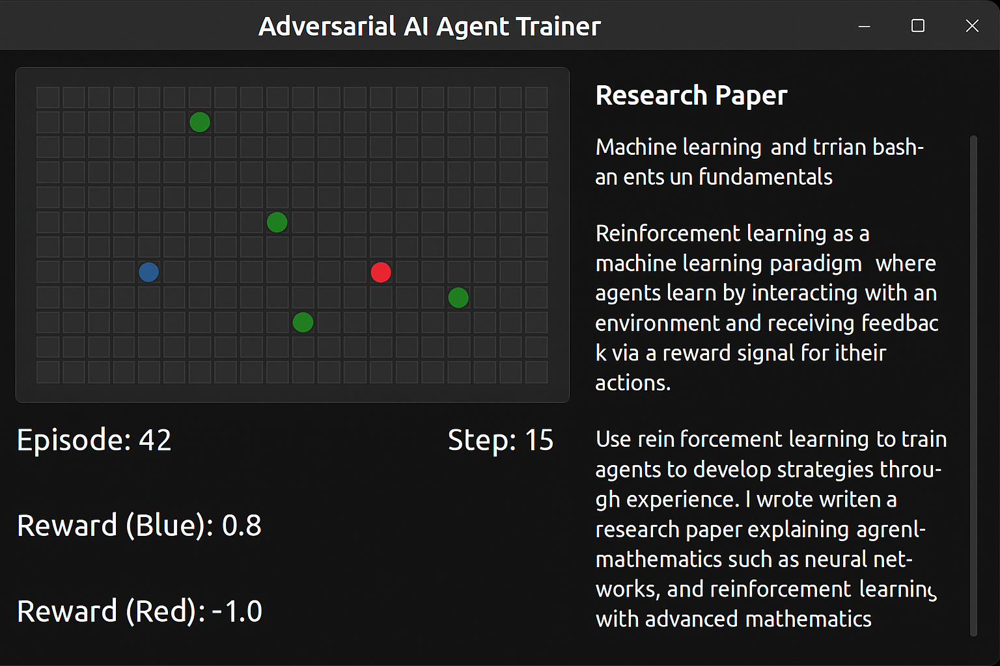
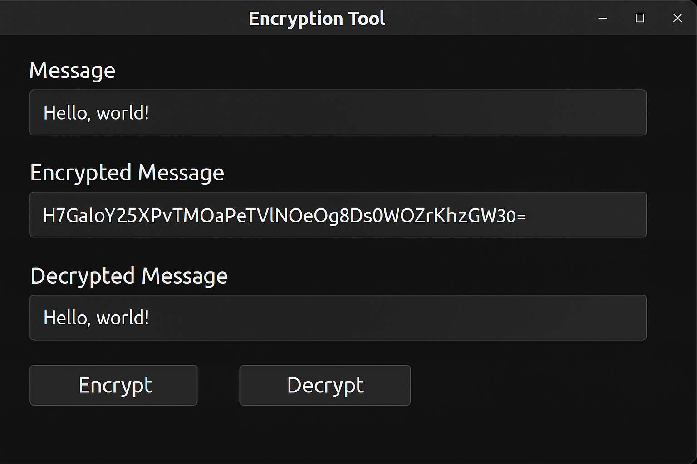
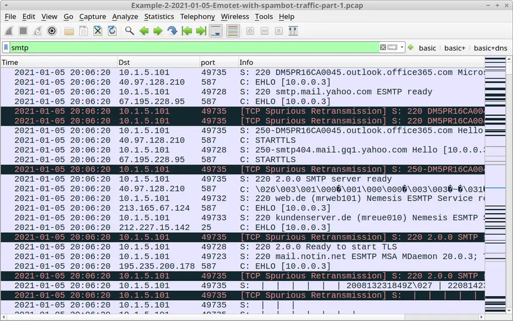
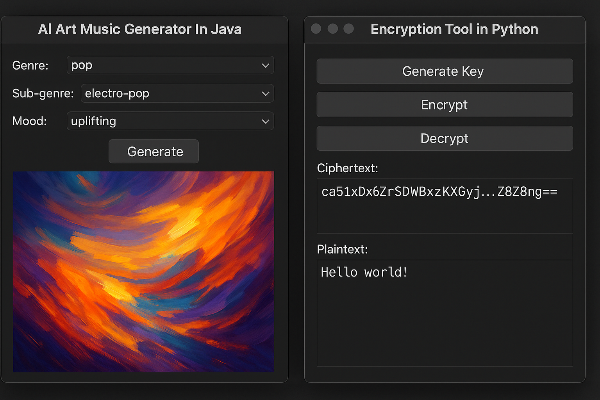

Motivated Cyber Security Analyst with hands-on Python development experience and a strong interest in AI modeling.
Skilled in clean, efficient coding and applying machine learning techniques using libraries like TensorFlow and PyTorch.
Well versed in Cyber Security Principles and a strong foundation in network security and risk assessment. Experienced in
AI-driven and full-stack projects, with a focus on collaboration and continuous learning.
Below are selected projects.

Adversarial AI Agent Trainer In Python
Developed an environment using AI where agents learn to compete against
each other through reinforcement learning with a reward system to encourage strategic decision-making. Wrote a
research paper explaining the fundamentals of machine learning and reinforcement learning, with an in-depth analysis of
the advanced mathematics behind neural networks and reinforcement learning

Traffic Detection in Wireshark
Developed a program to encrypt and decrypt messages using AES and RSA encryption
algorithms. Implemented key generation, secure key storage, and message exchange protocols to simulate data
protection mechanisms. Used Cryptography libraries to handle encryption operations, key pairs, and digital signatures

Encryption Tool in Python
Captured and analyzed live network traffic using Wireshark to identify security
vulnerabilities such as unencrypted credentials and suspicious IP activity. Detected anomalies including potential malware
communications and DNS tunneling patterns. Applied protocol filters and deep packet inspection to investigate traffic
behaviour and assess network risk.

AI Art Music Generator In Java
AI Art Music Generator In Java - Designed and implemented a Java application that generates AI-created artwork
based on user-input music preferences. Mapped music genres, sub-genres, and emotional tones to visual elements like
colour and style. Integrated algorithms that translate user inputs into aesthetic visual outputs.
Encryption Tool in Python - Developed a program to encrypt and decrypt messages using AES